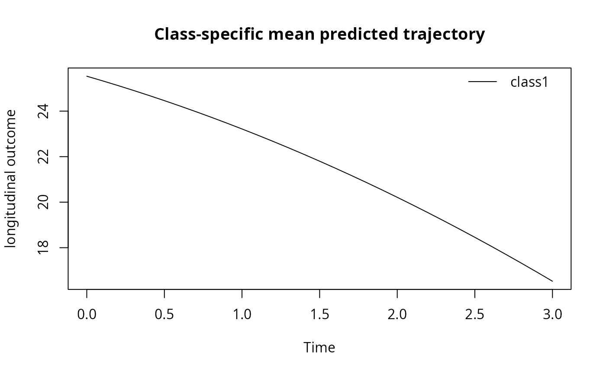

Marginal predictions in the natural scale of a pre-transformed outcome
Source:R/predictYback.R
predictYback.RdThe function computes the predicted values of the longitudinal marker (in each latent class if ng>1) for a specified profile of covariates, when a non-parameterized pre-transformation was applied (e.g., log, square root). A Gauss-Hermite or Monte-Carlo integration is used to numerically compute the back-transformed predictions.
Usage
predictYback(
x,
newdata,
var.time,
methInteg = 0,
nsim = 20,
draws = FALSE,
ndraws = 2000,
na.action = 1,
back,
...
)Arguments
- x
an object inheriting from class
hlmerepresenting a general latent class mixed model.- newdata
data frame containing the data from which predictions are to be computed. The data frame should include at least all the covariates listed in x$Xnames2. Names in the data frame should be exactly x$Xnames2, i.e., the names of covariates specified in
hlmecalls.- var.time
A character string containing the name of the variable that corresponds to time in the data frame (x axis in the plot).
- methInteg
optional integer specifying the type of numerical integration. Value 0 (by default) specifies a Gauss-Hermite integration which is very rapid but neglects the correlation between the predicted values (in presence of random-effects). Value 1 refers to a Monte-Carlo integration which is slower but correctly accounts for the correlation between the predicted values.
- nsim
number of points used in the numerical integration. For methInteg=0, nsim should be chosen among the following values: 5, 7, 9, 15, 20, 30, 40 or 50 (nsim=20 by default). If methInteg=1, nsim should be relatively important (more than 200).
- draws
boolean specifying whether confidence bands should be computed. If draws=TRUE, a Monte Carlo approximation of the posterior distribution of the predicted values is computed and the median, 2.5% and 97.5% percentiles are given. Otherwise, the predicted values are computed at the point estimate. By default, draws=FALSE.
- ndraws
integer. If draws=TRUE, ndraws specifies the number of draws that should be generated to approximate the posterior distribution of the predicted values. By default, ndraws=2000.
- na.action
Integer indicating how NAs are managed. The default is 1 for 'na.omit'. The alternative is 2 for 'na.fail'. Other options such as 'na.pass' or 'na.exclude' are not implemented in the current version.
- back
function to back-transform the outcome in the original scale.
- ...
further arguments to be passed to or from other methods. They are ignored in this function.
Examples
data_lcmm$transfYdep2 <- sqrt(30 - data_lcmm$Ydep2)
m1 <- hlme(transfYdep2 ~ Time, random=~ Time, subject="ID", data = data_lcmm)
pred1 <- predictYback(m1, newdata = data.frame(Time = seq(0, 3, 0.1)),
var.time = "Time", back = function(x) {30 - x^2})
plot(pred1)
